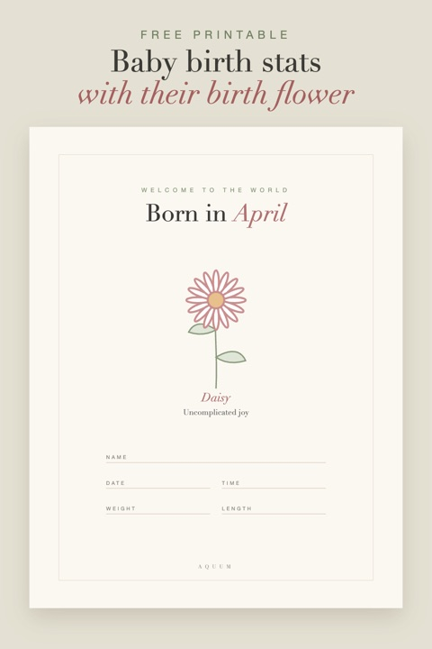

Free Printable Baby Birth Stats Print with Their Birth Flower
2026-10-03
Written by the team behind Aquum, a small birth flower gift shop. How we make money.

The first details of a new life (the name, the day, the time, how much they weighed) are worth keeping somewhere prettier than a hospital bracelet. This print puts them next to the baby's birth flower and what it means.
Download the free baby birth stats prints (PDF)
Twelve letter-size pages, one for every month. Each says "Welcome to the world, born in [month]", with the month's flower, its meaning and lines for:
- Name
- Date and time
- Weight and length
How to make it
- Print the page for the baby's month on heavy matte paper or cardstock, at 100% or "actual size".
- Fill it in by hand with a fine black pen, or with a white-gel pen if you print on darker paper. Practice the name once on scrap paper first.
- Frame it: the design sits inside a thin border with a wide margin, so it fits an 8 × 10 frame or an 8.5 × 11 frame with a mat.
Ideas for using it
- For the nursery wall, next to the birth flower chart.
- As a baby shower gift: print the month the baby is due, frame it blank and let the parents fill it in. More ideas in our baby shower guide.
- For the baby book: trim it down and glue it on the first page.
- For the new mom: a framed print with a card. See our gifts for new moms.
- For grandparents: print a second copy for them; they'll put it somewhere everyone can see.
Not sure of the flower? Every month's flower and meaning is in our birth flowers by month guide, and many months have a second birth flower too.
These prints are for personal use: print as many as you like. Please don't sell them or share the file on other sites; link to this page instead.
More free printables: all our birth flower printables in one place.